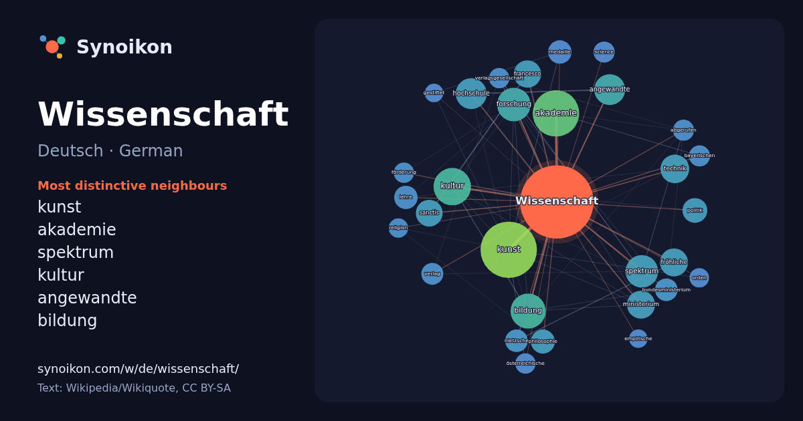

Deutsch · German · popular word
Wissenschaft
“science” · The words found around it in 1006 instances from German Wikipedia, Wikiquote.

Most distinctive neighbours
- kunst 63×
- akademie 45×
- spektrum 30×
- kultur 30×
- angewandte 27×
- bildung 27×
- forschung 26×
- fröhliche 24×
- sanctis 22×
- francesco 21×
- ministerium 21×
- hochschule 20×
- technik 20×
- nietzsche 16×
- medaille 16×
- bundesministerium 15×
- lehre 14×
- abgerufen 14×
- philosophie 14×
- verlagsgesellschaft 13×
× = how many times more often than in general German Wikipedia text.
Most frequent neighbours
- kunst 93
- akademie 63
- kultur 41
- bildung 36
- forschung 33
- spektrum 31
- leben 29
- angewandte 28
- hochschule 28
- technik 24
- fröhliche 23
- ministerium 23
- berlin 22
- francesco 22
- sanctis 21
- friedrich 19
- politik 18
- philosophie 17
- lehre 16
- medaille 16
In context
- Das Wort Wissenschaft (mittelhochdeutsch wizzen[t]schaft beinhaltet Wissen, Vorwissen, Genehmigung; lateinisch scientia) bezeichnet die Gesamtheit des Wikipedia snippets · Wissenschaft
- Politikwissenschaft – auch Politische Wissenschaft, Wissenschaft von der Politik, Wissenschaftliche Politik oder Politologie – ist als Integrationswissenschaft Wikipedia snippets · Politikwissenschaft
- Wissenschaft und Wissenschaft über Wissenschaft („Science and Science of Science“, «Наука та наукознавство», „Наука и науковедение“) – ist eine internationale Wikipedia snippets · Wissenschaft und Wissenschaft über Wissenschaft
- Spektrum der Wissenschaft (Abkürzung: Spektrum, Spektrum Wiss., SdW) ist eine populärwissenschaftliche Monatszeitschrift. Sie wurde 1978 als deutschsprachige Wikipedia snippets · Spektrum der Wissenschaft
- Christliche Wissenschaft (englisch Christian Science) ist eine 1866 von Mary Baker Eddy gegründete neue religiöse Bewegung, die als religiöse Sondergemeinschaft Wikipedia snippets · Christliche Wissenschaft
- Bild der Wissenschaft (Eigenschreibweise: bild der wissenschaft, kurz bdw) ist eine monatlich erscheinende populärwissenschaftliche Zeitschrift aus Deutschland Wikipedia snippets · Bild der Wissenschaft
- Naturwissenschaften (Begriffsklärung) Wissenschaft und Wissenschaft über Wissenschaft Wissenschaftler Die fröhliche Wissenschaft Eine ganz besondere Wissenschaft Wikipedia snippets · Wissenschaft (Begriffsklärung)
- Nationen für Erziehung, Wissenschaft und Kultur, in Deutschland Organisation der Vereinten Nationen für Bildung, Wissenschaft und Kultur, ist eine Internationale Wikipedia snippets · UNESCO
More German words
Precomputed on 2026-10-09 with default settings (±5 words, medium corpus). The interactive map can refresh it with live data.